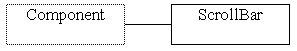
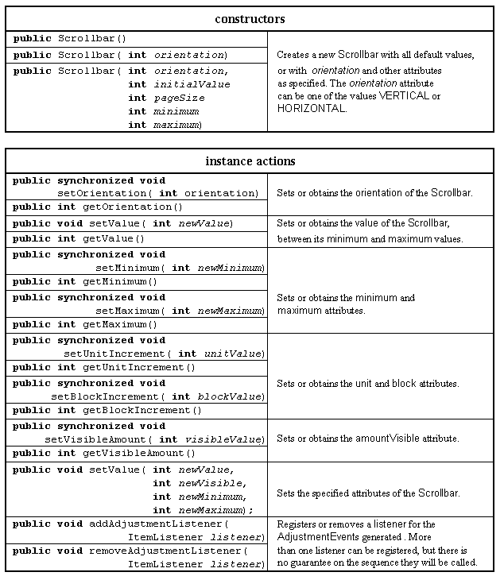

The Scrollbar class


The Scrollbar class provides an area containing a slider which can be dragged from one end of the bar to the other to indicate a quantitative value, and arrow icons at each end which can be used for fine adjustment of the slider.
The Scrollbar generates an AdjustmentEvent every time the user changes its value.